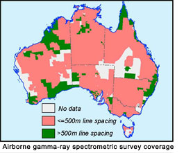

|
This edition of the Radiometric Map of Australia has been produced from 558 individual survey grids that have been matched and merged into composite K, U and Th grids over Australia at 100 metre resolution. The data are from surveys flown by Geoscience Australia, and surveys flown under contract to Geoscience Australia and the State and Territory Geological Surveys. The source data are used with their permission. The surveys were flown with a range of line spacings (see survey coverage diagram), flying heights, and measurement accuracies (Percival, 2008). |
 |
Ternary
K-Th-U ternary is an RGB image with dimensionless units. The NE gradient
has been enhanced (dose) and the histogram equalised for area.
Dose rate
Air-absorbed dose due to K, Th and U. The measurments used are nG/hr.
The histogram has been equalised using the rain2 look-up table.
Potasium
Potassium (K) radioelement concentrations uses % potassium as the
measurment. The histogram has been equalised using the rain2 look-up
table.
Thorium
Thorium (Th) radioelement concentrations uses ppm equivalent thorium as
the measurment. The histogram has been equalised using the rain2 look-up
table.
Uranium
Uranium (U) radioelement concentrations uses ppm equivalent uranium as
the measurment. The histogram has been equalised using the rain2 look-up
table.
Uranium/Potassium Ratio (U-K Ratio)
Ratio of uranium over potassium radioelement concentrations. The
histogram has been equalised using the rain2 look-up table.
Thorium/Potassium Ratio (K-Th Ratio)
Ratio of thorium over potassium radioelement concentrations. The
histogram has been equalised using the rain2 look-up table.
Uranium/Thorium Ratio (Th-U Ratio)
Ratio of uranium over thorium radioelement concentrations. The histogram
has been equalised using the rain2 look-up table.
EXPLANATORY NOTES:
The ternary radiometric image shows the concentrations of the
radioelements potassium (K), uranium (U) and thorium (Th) at the Earth's
surface as measured using the airborne gamma-ray spectrometric method.
The image is a false colour composite using the colours red, blue and
green to represent potassium, uranium and thorium, respectively. These
primary colours are mixed in the same proportions at each point on the
map as the concentrations of the radioelements. Thus white areas have
high concentrations of all the radioelements and dark areas have low
concentrations. Areas high in K only appear red, and areas high in U and
Th but low in K appear turquoise (a mixture of green and blue). So this
representation of the data is useful for viewing the concentrations of
all three radioelements in a single image.
The distribution of the radioelements reflects the geochemistry and mineralogy of bedrock and regolith materials. K, U and Th precipitate late in the igneous and volcanic crystallisation sequence. Thus felsic igneous and volcanic equivalents are usually high in these elements and mafic rocks low. A general increase in K, U and Th with increasing bedrock silica content is usually observed. Surface weathering modifies the distribution of these elements, and their concentration in weathered material can differ significantly from fresh bedrock. K is often leached from highly weathered bedrock, whereas U and Th are retained by association with resistate minerals, clay and oxides in the weathering profile.
The airborne gamma-ray spectrometric data used to compile this map were acquired by Geoscience Australia and State and Territory Geological Surveys over a period of about 40 years. During this period there were significant changes in the technology and techniques used to estimate the radioelement concentrations. As a result, the radiometric survey data were not all registered to the same baseline. To solve this problem, Geoscience Australia commissioned UTS Geophysics Pty Ltd to conduct an Australia-wide Airborne Geophysical Survey (AWAGS) to be used to establish a consistent radioelement baseline for Australia.
The survey was funded under the Australian Government's Onshore Energy Security Program with the flying phase of the survey completed in December 2007 and the final processed radiometric data delivered in June 2008. The survey covers the entire continent with north-south flight lines spaced 75 km apart, and east-west tie lines spaced 400 km apart. Gamma-ray spectrometric data, acquired at a nominal 80 metre terrain clearance along the flight lines, was processed to be consistent with an international baseline established by the International Atomic Energy Agency. The final estimates of the radioelement concentrations along the survey lines comprise the new Australian radioelement baseline.
The radiometric data contained in the National Airborne Geophysical Database have been levelled to the new baseline by minimising both the differences in radioelement concentration estimates between surveys (where these surveys overlap) and the differences between the surveys and the AWAGS traverses (where these overlap) using an enhancement of the method described by Minty (2000).
This edition of the Radiometric Map of Australia has been produced from 558 individual survey grids that have been matched and merged into composite K, U and Th grids over Australia at 100 metre resolution. The data are from surveys flown by Geoscience Australia, and surveys flown under contract to Geoscience Australia and the State and Territory Geological Surveys. The source data are used with their permission. The surveys were flown with a range of line spacings (see source diagram), flying heights, and measurement accuracies (Percival, 2008).
Data was supplied by: Geoscience Australia; New South Wales Department of Primary Industries; Department of Primary Industries Victoria; Department of Mines and Energy Queensland; Department of Primary Industries and Resources South Australia; Department of Industry and Resources Western Australia; Department of Infrastructure, Energy and Resources Tasmania; and the Department of Regional Development, Primary Industry, Fisheries and Resources Northern Territory. Most of the data were acquired at an altitude of 100 metre or less along lines spaced 500 metre apart or less.
For each of K, U and Th, individual surveys were gridded using a cell size of approximately one-fifth of the survey line spacing, with some grids subjected to micro-levelling (Minty, 1991). The grids were levelled to the AWAGS baseline, as described earlier, and then low-pass filtered using a 7-point, degree-3 Savitzky-Golay filter (Savitzky and Golay, 1964). K, U and Th merged grids were created by interpolating each survey grid onto a regular grid with a cell size of 3.75 seconds of arc using the minimum curvature method of Briggs (1974), and the grid boundaries seamlessly feathered (Minty, 2000). The final grids were then reprojected to the Lambert Conformal Conic projection with a cell size of 100 metre. For imaging purposes, concentrations were normalised to a 0-255 range through histogram equalisation.
REFERENCES:
Briggs, I.C., 1974, Machine contouring using minimum curvature: Geophysics, 39, 39-48. Minty, B.R.S., 1991, Simple micro-levelling for aeromagnetic data: Exploration Geophysics, 22, 591-592. Minty, B.R.S., 2000, Automatic merging of gridded airborne gamma-ray spectrometric surveys: Exploration Geophysics, 31, 47-51. Percival, P.J., 2008, Index of Geophysical Surveys, (Tenth Edition): Geoscience Australia Record 2008/01. Savitzky, A., and Golay, J.E., 1964, Smoothing and differentiation of data by simplified least squares procedures: Analytical Chemistry, 36, 1627-1639.